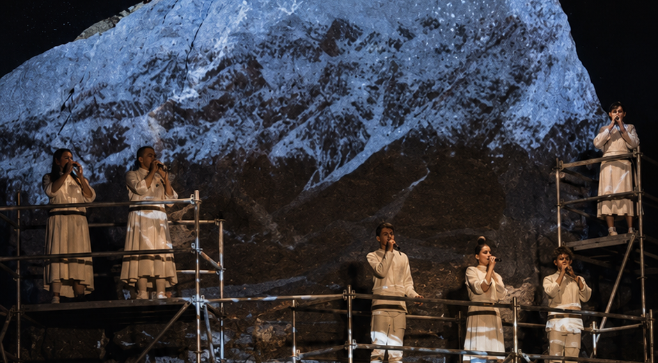

ЗАДАЧА
Переосмыслить ежегодный выезд Agency Club — закрытого клуба агентств-партнёров Яндекс Рекламы: уйти от привычного конференционного формата и дать участникам пространство для перезагрузки без потери бизнес-смысла.
ЛИЧНОЕ ПОРТФОЛИО2026
Travel experience
Выезд для агентского клуба Яндекс Рекламы, где бизнес-повестку вынесли из привычного зала к Катуни — и превратили Алтай в пространство soft reset для лидеров рынка.



Переосмыслить ежегодный выезд Agency Club — закрытого клуба агентств-партнёров Яндекс Рекламы: уйти от привычного конференционного формата и дать участникам пространство для перезагрузки без потери бизнес-смысла.
Алтайская перезагрузка — soft reset. Рабочую программу и отдых собрали вокруг контрастов Алтая: бизнес и природа, интенсивность и пауза, привычный ритм и возможность из него выйти.
Закрытый лендинг и приглашения с координатами, бизнес-сессии на природе, Катунь и горные маршруты, Алиса в номерах, локальная программа, секретный ужин, аудиоперформанс и плёночные камеры — весь путь гостя работал на идею soft reset.


Офлайн-приглашения с координатами и закрытый лендинг с кодом доступа ещё до поездки погружали гостей в историю и создавали ощущение необычного путешествия.
Бизнес-программа вышла из конференц-зала: Катунь, горы, воздух, костры и открытые пространства стали частью самого формата.
Алиса стала персональным голосом перезагрузки в номерах: рассказывала об Алтае, напоминала расписание, включала звуки костра, будила гостей и сопровождала программу.
Программа продолжала идею soft reset: вечер «Культуры Катуни», локальная кухня, поездка в горы на «Соколах», секретный ужин и танцевальный аудиоперформанс.
Гостям выдали плёночные фотоаппараты, чтобы они отложили телефоны и снимали поездку осознанно. После возвращения кадры проявили и отправили участникам.


ОТКРЫТА К НОВЫМ ЗАДАЧАМ
И ИНТЕРЕСНЫМ БРИФАМ